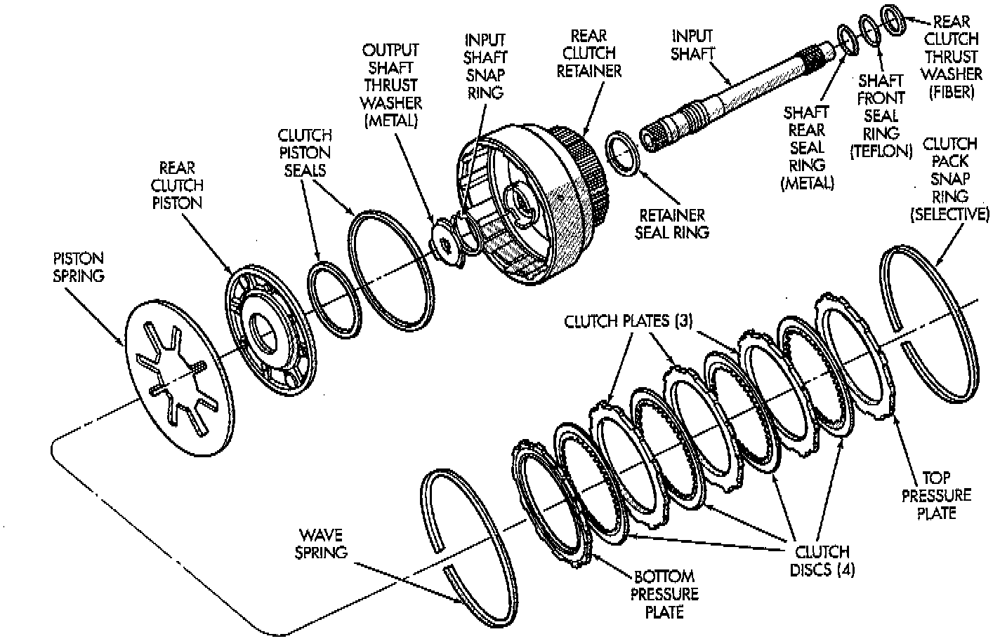
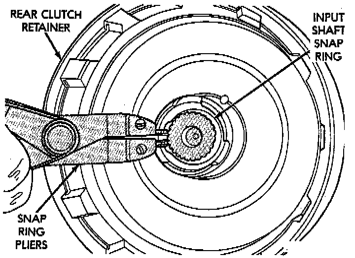
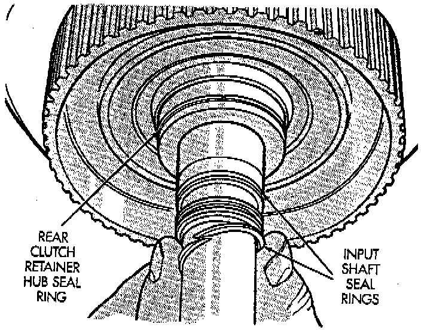
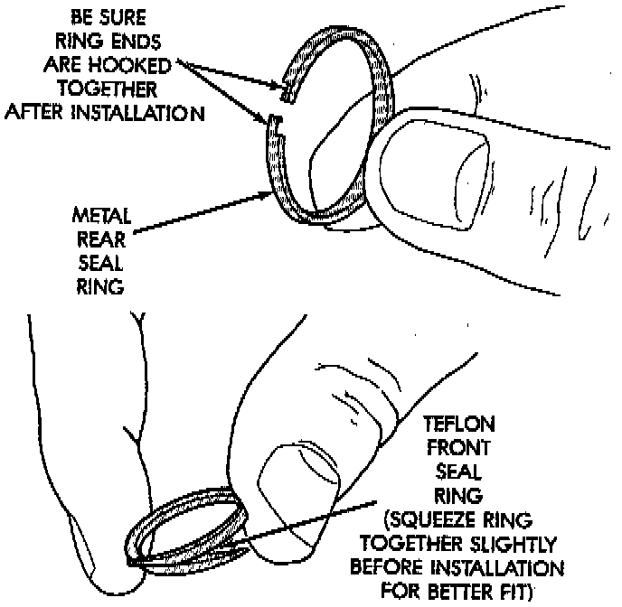
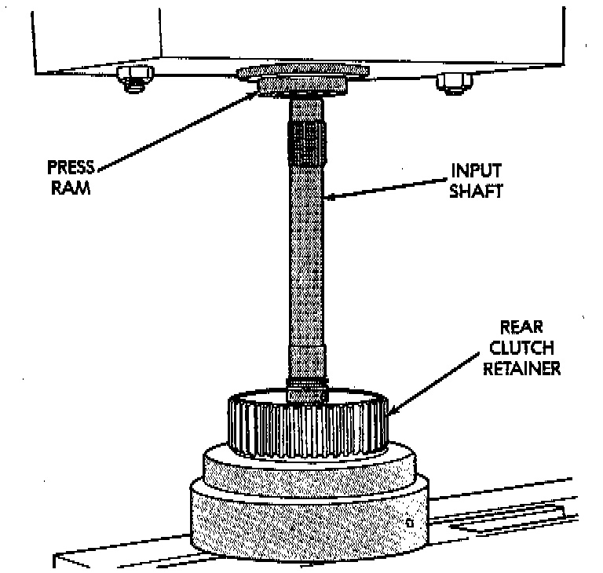
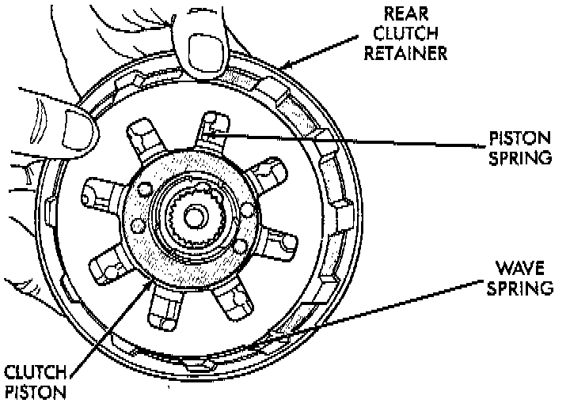
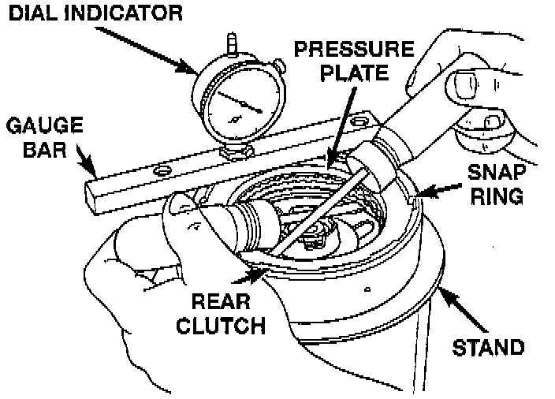
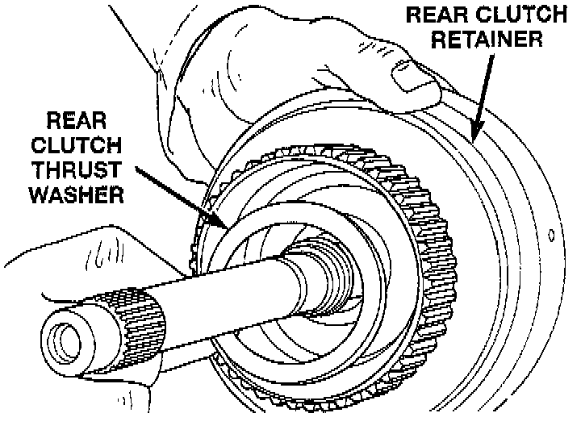

Rear Clutch
DISASSEMBLY1. Remove fiber thrust washer from forward side of clutch retainer.
2. Remove input shaft front/rear seal rings.

3. Remove selective clutch pack snap ring.
4. Remove top pressure plate, clutch discs, steel plates, bottom pressure plate and wave snap ring and wave spring.
5. Remove clutch piston with rotating motion.
6. Remove and discard piston seals.

7. Remove input shaft snap-ring. It may be necessary to press the input shaft in slightly to relieve tension on the snap-ring
8. Press input shaft out of retainer with shop press and suitable size press tool. Use a suitably sized press tool to support the retainer as close to the input shaft as possible.
ASSEMBLY
1. Soak clutch discs in transmission fluid while assembling other clutch parts.

2. Install new seal rings on clutch retainer hub and input shaft if necessary.
- Be sure clutch hub seal ring is fully seated in groove and is not twisted.

3. Lubricate splined end of input shaft and clutch retainer with transmission fluid. Then press input shaft into retainer. Use a suitably sized press tool to support retainer as close to input shaft as possible.
4. Install input shaft snap-ring.

5. Invert retainer and press input shaft in opposite direction until snap-ring is seated.
6. Install new seals on clutch piston. Be sure lip of each seal faces interior of clutch retainer.
7. Lubricate lip of piston seals with generous quantity of MOPAR Door Ease. Then lubricate retainer hub and bore with light coat of transmission fluid.
8. Install clutch piston in retainer. Use twisting motion to seat piston in bottom of retainer. A thin strip of plastic (about 0.020" thick), can be used to guide seals into place if necessary.
CAUTION: Never push the clutch piston straight in. This will fold the seals over causing leakage and clutch slip. In addition, never use any type of metal tool to help ease the piston seals into place. Metal tools will cut, shave, or score the seals.

9. Install piston spring in retainer and on top of piston. Concave side of spring faces downward (toward piston).
10. Install wave spring in retainer. Be sure spring is completely seated in retainer groove.
11. Install bottom pressure plate. Ridged side of plate faces downward (toward piston) and flat side toward clutch pack.
12. Install first clutch disc in retainer on top of bottom pressure plate. Then install a clutch plate followed by a clutch disc until entire clutch pack is installed (4 discs and 3 plates are required).
13. Install top pressure plate.
14. Install selective snap ring. Be sure snap ring is fully seated in retainer groove.

15. Using a suitable gauge bar and dial indicator, measure clutch pack clearance.
a. Position gauge bar across the clutch drum with the dial indicator pointer on the pressure plate.
b. Using two small screw drivers, lift the pressure plate and release it.
c. Zero the dial indicator.
d. Lift the pressure plate until it contacts the snap-ring and record the dial indicator reading. Clearance should be 0.64 - 1.14 mm (0.025 - 0.045 inch). If clearance is incorrect, steel Plates, discs, selective snap ring and pressure plates may have to be changed. The selective snap ring thicknesses are:
- 0.107 - 0.109 inch
- 0.098 - 0.100 inch
- 0.095 - 0.097 inch
- 0.083 - 0.085 inch
- 0.076 - 0.078 inch
- 0.071 - 0.073 inch
- 0.060 - 0.062 inch

16. Coat rear clutch thrust washer with petroleum jelly and install washer over input shaft and into clutch retainer. Use enough petroleum jelly to hold washer in place.
17. Set rear clutch aside for installation during